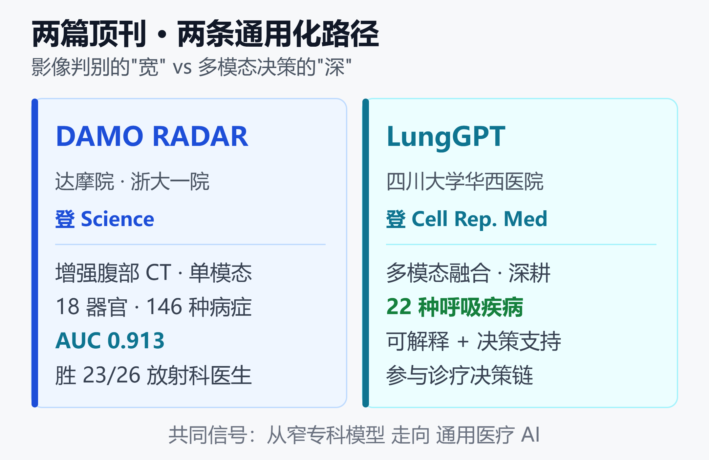

"一病一模型"时代结束：两篇顶刊揭示中国通用医疗AI的现状与前景
先看三个能把话题拉回地面的数字。
一个模型，一次读片，识别腹部 18 个器官里的 146 种病症，近 4 万例真实检查上 AUC 达到 0.913。在人机对比中，它的表现超过了 26 名放射科医生里的 23 名。
这不是实验室里的玩具。2026 年 9 月，阿里达摩院联合浙大一院等机构做出的通用腹部影像模型 DAMO RADAR 登上《Science》，并且直接开源。几乎同期，四川大学华西医院的 LungGPT 登上《Cell Reports Medicine》，用一套多模态系统覆盖 22 种呼吸系统疾病，还能给出可解释的诊断依据。
两篇顶刊，一个共同信号：医疗影像 AI 正在告别"一个病配一个模型"的旧范式。本文就从这两个案例出发，谈中国通用医疗 AI 的真实现状与前景——它到底强在哪、独特优势是什么，以及横在商业化路上的三道坎。
一、先看清事实：两篇顶刊到底做了什么
在下判断之前，先把两个案例的事实摆清楚。它们代表了通用医疗 AI 的两条不同技术路径。
DAMO RADAR：影像判别的"全科通读"
RADAR 的全称是 Rapid Abdominal Diagnosis with AI and Radiology，本质是一个视觉-语言模型。
它读的是增强腹部 CT，一次前向计算就能覆盖肝、胰、胆、肾、脾、胃、肠等 18 个器官与解剖结构，识别 146 种临床所见，包括恶性肿瘤。
它的成绩单值得细看：
- 近 4 万例内部队列平均 AUC 0.913，逼近满分 1.0
- 在 8 家外部医院、急诊场景、4 类癌症的病理金标准验证中都保持稳定
- 人机对比中优于 26 名医生里的 23 名
- 作为辅助工具时，让医生敏感度提升约 10%，读片时间缩短超过 30%
技术上的关键，是它采用"器官级细粒度对齐 + 自适应对比学习"，模拟放射科医生逐个器官读片的逻辑，而且训练时用 CT 配对现成的临床报告，不需要额外人工标注。这一点很重要，后面会讲为什么。
LungGPT：多模态决策的"专科深耕"
如果说 RADAR 是横向铺开的"全科通读"，华西的 LungGPT 走的是另一条路：在呼吸这个专科里做深，做成一套完整的决策系统。
根据其发表信息，LungGPT 是一套统一的多模态系统，覆盖 22 种呼吸系统疾病，主打两个词：可解释和临床决策支持。
这两个词的分量不小。多模态，意味着它不只看一张影像，而是融合影像、文本、结构化数据等多路信息；可解释，意味着它给出的不是黑箱结论，而是能说清"为什么这么判"的依据；决策支持，意味着它的目标不止于"分类出是什么病"，还要参与到后续的诊疗决策里。
两条路径，一张对比图

如上图，两者的差别一目了然：RADAR 是"宽"——用单模态影像覆盖尽可能多的病症；LungGPT 是"深"——在单一专科里融合多模态、打通决策链。但它们指向同一个方向：让一个系统处理过去需要多个专用模型才能覆盖的场景。
下面用一张表把核心事实并排看：
| 维度 | DAMO RADAR | LungGPT |
|---|---|---|
| 主导方 | 达摩院·浙大一院 | 华西医院 |
| 覆盖 | 146 种腹部病 | 22 种呼吸病 |
| 模态 | 影像单模态 | 多模态融合 |
| 期刊 | Science | Cell Rep. Med |
二、为什么说"一病一模型"时代结束
要理解这两篇论文的分量，得回看过去十年医疗影像 AI 是怎么做的。
传统做法是"一病一模型"：想筛肺结节，训一个肺结节模型；想查糖尿病视网膜病变，再训一个眼底模型。每个模型只解决一个窄任务，需要大量针对性标注，换个病种就得从头再来。
这套模式的天花板很明显。医院里一次腹部 CT 可能牵涉几十种潜在异常，如果每种都要单独部署一个模型，工程和运维成本会失控，医生也不可能在工作流里挂几十个 AI 插件。一份 2025 年的腹部放射学 AI 综述梳理了 2019 到 2024 年的 432 项研究，发现绝大多数仍集中在单一任务的分割、检测、分类上——这正是"一病一模型"留下的碎片化格局。
RADAR 的意义，就是用一个模型吃下整片腹部诊断版图。它证明了通用模型不仅能覆盖广，精度还能达到专家级。这是从"专科单点"到"通用全景"的范式跃迁。
值得一提的是，这不是达摩院第一次做这件事。2023 年它的 PANDA 模型就用平扫 CT 做胰腺癌筛查登上《Nature Medicine》；2026 年 9 月，另一支团队的通用细胞病理视觉基础模型 CROWN 也登上了《Nature》子刊。通用化，正在从影像蔓延到病理。
关于专用模型与通用模型谁更适合什么场景，可以参考专用小模型与大模型的长期共存：场景、成本与选型里的分析。
三、它们凭什么"通用"：技术底座
通用医疗 AI 能成立，背后有两个技术支点。
第一个是视觉-语言预训练。 RADAR 用 CT 影像配对临床报告来训练，让模型在"看图"的同时理解报告里的自然语言描述。这样模型学到的不是"这张图属于第几类"，而是影像特征与临床语义之间的对应关系。这也是它无需额外人工标注就能扩展到 146 种病症的原因——报告本身就是天然的监督信号。
第二个是细粒度的解剖对齐。 通用模型最容易踩的坑，是"什么都懂一点，什么都不精"。RADAR 用器官级对齐把影像的每个解剖区域和报告里对应的描述精确匹配，逐器官做对比学习，从而在保持广覆盖的同时守住了精度。这正是它敢和专科医生比、还能赢大多数人的底气。
LungGPT 则展示了另一条底座：多模态融合。呼吸疾病的诊断很少只靠一张片子，往往要结合症状、检验、病史。把这些异构信息统一进一个系统，并让它输出可解释的推理链，是比单模态判别更难、也更贴近真实诊疗的工程。
一句话：通用不等于把很多小模型缝在一起，而是靠预训练范式和对齐技术，让单个模型在广度和精度之间找到平衡。
四、中国做通用医疗 AI 的独特优势
为什么这两篇顶刊都出自中国团队？这不是偶然，背后有三个结构性优势。
海量真实数据。 中国的三甲医院单院年影像检查量极大，且病种齐全。RADAR 能拿到近 4 万例带报告的 CT 做验证，LungGPT 能覆盖 22 种呼吸病，前提都是有足够密度的真实临床数据。这是通用模型训练的燃料。
产研医紧密协同。 RADAR 是达摩院（产业方）+ 浙大一院（临床方）联合，LungGPT 直接出自华西这样的顶级临床机构。企业出算法工程能力，医院出数据和临床验证，这种深度绑定在很多国家反而不容易组织起来。
政策与场景牵引。 中国有明确的分级诊疗和基层能力提升需求。通用影像模型天然适配"县域医院缺专家"的痛点——一个能读全腹的模型，价值远大于一堆只会看单病种的插件。加上 DRG/DIP 支付改革推动医院降本增效，AI 辅助读片的动机是实打实的。
当然，优势不等于胜局。数据密度高不代表数据能自由流通，场景明确不代表落地顺畅。这就引出了下一节的冷静部分。
五、现状盘点：热闹的顶刊，冷静的临床
必须说清楚一件事：登上顶刊、开源代码，和大规模用进临床，是三件不同的事。
RADAR 团队自己也把模型定位成"阅片助手和教学工具，而不是替代医生"。这句话是重点。它意味着即便在最领先的成果里，AI 的角色仍是辅助，最终责任和签字权还在医生手里。
现实中的通用医疗 AI，大致处在这样的状态：
- 论文和技术验证已达专家级，这是真的进展
- 开源降低了研究门槛，会加速迭代，这也是真的
- 但真正进到诊疗主流程、影响临床决策的规模化应用，仍然有限
换句话说，我们正处在"技术拐点已过、落地拐点未到"的中间地带。热闹在实验室和论文，冷静在病房和门诊。这中间隔着三道坎。
六、横在商业化路上的三道坎
第一道坎：幻觉与可靠性
判别式影像模型（如 RADAR）的输出相对可控，但一旦引入语言生成、走向"能对话、能解释、能给建议"的医疗大模型，幻觉问题就绕不开。模型可能一本正经地编造一个不存在的结论，而在医疗场景，一次幻觉的代价可能是误诊。
这也是 LungGPT 强调"可解释"的原因之一：让模型交出推理依据，而不是只给答案，是对抗幻觉、建立信任的必要设计。关于生成式 AI 在医疗里如何界定责任，可以读AI 幻觉的责任链：谁来为错误结论负责。
第二道坎：责任归属与监管
AI 说这是恶性肿瘤，医生没复核就签了字，结果错了，责任算谁的？这个问题在法律和监管上尚无干净答案。
现实里，医疗 AI 要进临床必须过监管关。在中国，具备诊断功能的 AI 软件属于高风险医疗器械，需要拿到相应的三类注册证才能作为诊断依据使用。审批周期长、临床证据要求高，这让"顶刊成果"到"持证产品"之间存在明显的时间差。开源一个 SOTA 模型是一回事，把它变成合规上市的诊断设备是另一回事。
第三道坎：支付与商业模式
技术能用、合规能过，还要有人买单。谁付费？医院、医保、还是患者？
目前 AI 辅助诊断大多没有独立的收费编码，更多是作为医院提质增效的工具存在，靠节省人力、缩短流程来间接体现价值。在 DRG/DIP 按病种付费的大背景下，医院有动力用 AI 降本，但缺少直接的付费回路，商业模式仍在摸索。RADAR 选择开源，某种程度上也说明：在现阶段，扩大影响力和生态、而非直接卖模型，可能是更现实的路径。
七、前景：从阅片助手到诊疗协同
坎归坎，方向是清楚的。通用医疗 AI 的前景，可以从三个层面看。
近期（1-2 年）： AI 稳固"阅片助手"角色。像 RADAR 这样能提升敏感度、缩短读片时间的工具，会在影像科先普及，尤其在专家稀缺的基层。价值主张很朴素——不替代医生，但让医生更快更准。
中期（3-5 年）： 从单点辅助走向诊疗协同。LungGPT 代表的多模态决策支持是方向：模型融合影像、检验、病史，参与到诊断和治疗建议的完整链路里。这一步的关键不在算法，而在可解释性、责任框架和支付机制能不能同步跟上。
长期： 通用医疗基础模型作为底座，上面长出各专科的应用。就像今天的通用大模型之上有无数垂直应用，未来医疗 AI 也可能是"一个通用底座 + 各科室微调"的格局。开源（如 RADAR）会加速这个生态的形成。
医疗 AI 与更广的垂直大模型生态如何演进，可参考小模型生态 2026：医疗、农业、电子三大落地场景。
最大的想象空间：医疗 AI 平权
前面三个层面讲的都是"能力"，但通用医疗 AI 真正的分量，其实在另一个词上：平权。
优质医疗资源的分布从来不均衡。中国基层医疗机构的区域分布差异已有系统研究证实，城乡、东西部之间的能力落差是结构性的。一个县域医院可能有 CT 设备，却没有能稳定读出 146 种腹部病症的资深放射科医生——设备的普及远快于专家的培养。
这正是通用模型最该发挥价值的地方。三个理由：
- 诊断能力可以被复制，专家经验不能。 培养一名能覆盖全腹病症的资深放射科医生要十几年，而一个训练好的模型可以一次性部署到一千家医院。
- 通用模型才适配基层。 基层的 IT 预算和运维能力装不下几十个单病种插件，但可以装一个覆盖全腹的模型。这不是锦上添花，而是"能不能用得起"的差别。
- 收益在能力洼地最大。 RADAR 让医生敏感度提升约 10%、读片时间缩短超 30%。在专家密集的三甲，这是效率优化；在专家稀缺的县医院，这可能就是"查出来"和"漏掉"的区别。
RADAR 选择完整开源代码与权重，这一步的意义不只是学术开放。它意味着任何一家医院、任何一个研究团队，不必支付授权费、不必依赖单一厂商，就能拿到一个专家级的起点。对资源有限的机构和国家，这是实质性的门槛下降——过去买不起、也训不出的能力，现在可以自己部署、自己微调。
不过，平权这件事上必须格外诚实，因为它最容易被讲成漂亮话。
核心风险是性能会随人群漂移。 一个在东部三甲数据上训练出来的模型，搬到中西部县域，面对不同的设备型号、扫描协议、疾病谱和人群特征，精度很可能下滑。医疗 AI 领域已有明确警示：仅靠内部测试会高估诊断性能，必须做独立外部验证。2026 年一项基于 WHO 数据集对 AI 辅助阴道镜的外部验证研究，正是在做这件事。
所以平权不是"把模型发出去"就自动实现的。它至少还需要三样东西：在目标人群上做真实的外部验证、基层医生具备用得懂也敢质疑的能力、以及出错时清晰的兜底责任机制。缺了任何一样，"平权"就可能变成把未经本地验证的模型推给最缺乏纠错能力的地方——那不是普惠，是风险转移。
把话说回来：通用医疗 AI 提供了一种以前不存在的可能性，让顶级诊断能力第一次具备了低成本规模复制的技术条件。这个方向值得全力推进，前提是把验证和责任做扎实，而不是把开源当成终点。
小结
RADAR 和 LungGPT 这两篇同期顶刊，共同宣告了一件事：医疗影像 AI 的"一病一模型"时代正在结束，通用化范式已经站稳了脚跟。
中国团队能在这个方向领先，靠的是海量真实数据、产研医深度协同和明确的场景牵引。这是真实的技术进展，不是营销话术。
但也要清醒：从专家级的论文成果，到大规模改变临床的落地产品，中间隔着幻觉、责任、支付三道坎。技术拐点已过，落地拐点未到。
而这件事最大的想象空间在平权。顶级诊断能力第一次具备了低成本规模复制的技术条件，RADAR 的完整开源让县域医院和资源有限的机构有了一个专家级起点。但开源是起点不是终点——模型换个人群就可能掉精度，平权必须建立在本地外部验证和清晰责任机制之上。
对这个行业，最务实的期待或许是：先做好那个"让医生更快更准"的助手，把信任、合规、支付一点点跑通，再谈更远的诊疗协同与真正的普惠。方向对了，剩下的是耐心。
免责声明
本文基于公开报道与论文发布信息整理，仅供行业观察与学习交流，不构成任何投资建议或医疗诊断依据。文中提及的模型性能数据来自各自的发表与报道，实际临床效果需以权威机构验证与监管审批为准。AI 辅助诊断结果必须由具备资质的医生复核，任何医疗决策请遵从专业医师意见。
参考来源
- South China Morning Post —— Alibaba open-sources medical AI model that can detect cancer and nearly 150 conditions
- Anadolu Agency —— Alibaba open-sources AI model detecting cancer, 150 medical conditions
- Intelligent Living —— Alibaba's Medical AI Detects Cancer and 146 Conditions
- Longbridge —— Alibaba Health Imaging AI featured in Science can identify 146 diseases at once
- Nature Medicine —— Large-scale pancreatic cancer detection via non-contrast CT and deep learning（达摩院 PANDA）
- Nature Cancer —— A universal visual foundation model for computational cytopathology（CROWN 病理基础模型）
- Springer, Abdominal Radiology —— From promise to practice: a scoping review of AI applications in abdominal radiology
- npj Digital Medicine —— External validation of AI assisted colposcopy using WHO dataset for cervical precancer and cancer detection
- PMC —— Regional distribution differences and influencing factors of primary healthcare institutions in China
- Frontiers in Medicine —— Reducing misdiagnosis in AI-driven medical diagnostics: a multidimensional framework for technical, ethical, and policy solutions
- Cell Reports Medicine —— A multimodal integration pipeline for diagnosis of pulmonary infections（呼吸多模态相关工作）
说明：LungGPT 相关细节依据其在《Cell Reports Medicine》的发表信息整理；上方最后一条为该期刊呼吸多模态方向的可查证相关研究。内容已按合规要求改写与转述。
延伸阅读
推荐搭配装备
善其事，利其器。以下硬件能最大化你的AI体验👇
🔗 通过以上链接购买可支持本站持续运营 🙏